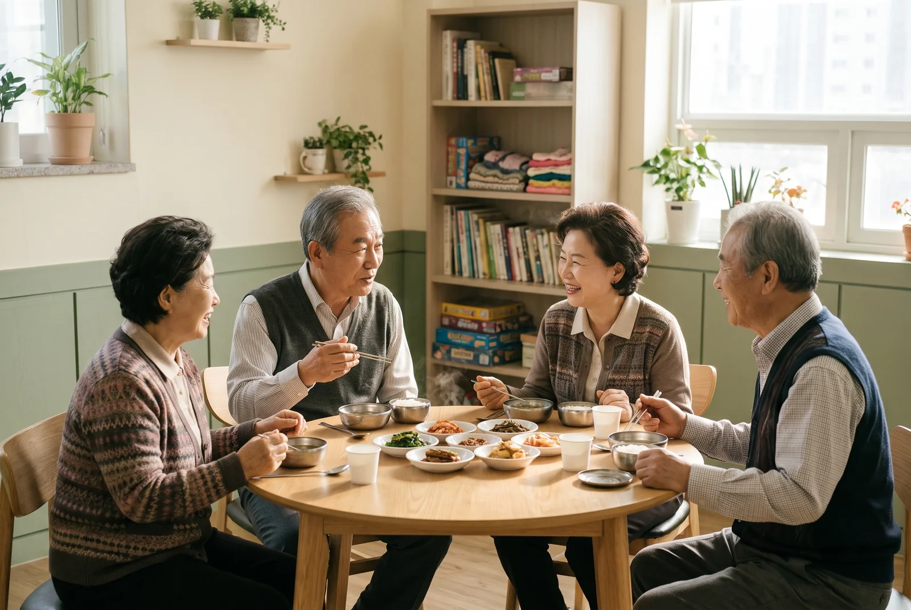
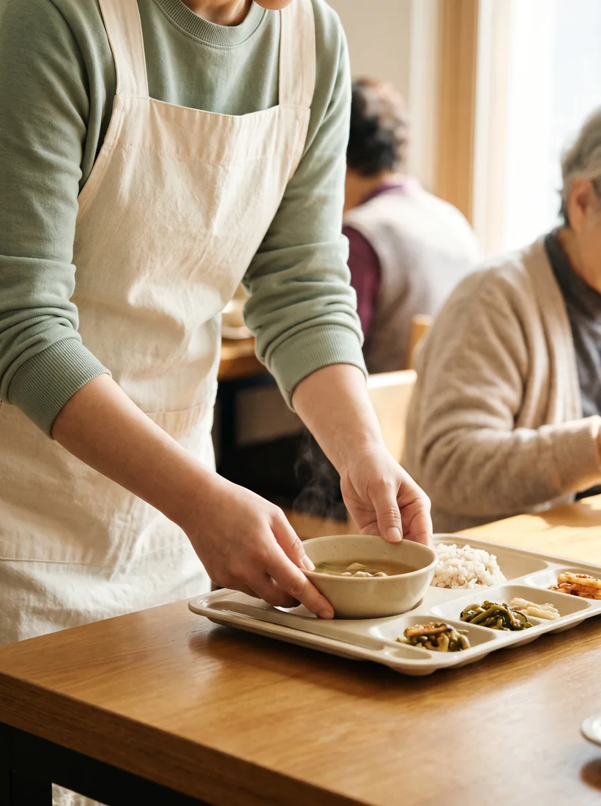

주간보호센터, 요양원, 노인복지관·경로식당의 급식 식자재를 공급합니다. 정기 집행부터 단가·공급, 식단·간식, 서류까지 네 가지 약속으로 답합니다.

말뿐인 약속은 빼고, 지킬 수 있는 것만 정했습니다. 정한 것은 매달 같은 방식으로 지킵니다.
로그인 없이 바로 보시고, 출력하거나 이미지로 저장해 쓰세요.
점검일과 점검자만 적고 체크하면 그날의 기록이 남는 A4 한 장입니다. 조리실 벽에 붙여 매일 쓰세요.
놓치기 쉬운 위생 10가지를 ‘잘못된 예 → 바꿀 한 가지’로 짝지었습니다. 새 조리원 교육 때 한 항목씩 짚어 보세요.
이번 달 제철이 먼저 보이는 12개월 표입니다. 식단 짜기 전에 옆에 두고 확인하세요.
푸드가이드에서 받는 서류와 시설에서 챙길 서류를 나눠 정리한 확인 목록입니다. 시설 유형에 따라 다를 수 있습니다.
소규모 시설도 이용하실 수 있습니다. 주간보호센터·요양원·경로식당 모두 납품할 수 있고, 최소 주문 기준은 없습니다.
네. 이츠밀은 여성기업 확인 기업으로, 공공기관·위탁 운영 시설과 소액 수의계약으로 거래하실 수 있습니다. 노인복지관·경로식당에도 납품합니다.
시설의 조리 형태(다진식·죽식 등)에 맞는 식자재와 상품을 상담에서 함께 찾아 드립니다. 제공 범위는 상담 시 안내합니다.
월 2회, 15일 단위로 정합니다. 정한 단가는 그 보름 동안 유지됩니다.
가격은 상담 시 안내합니다. 지금 쓰고 계신 단가표가 있다면 사진·파일을 contact@itsmeal.co.kr로 보내 주셔도 됩니다.
지금 쓰고 계신 단가표 사진·파일을 보내 주시면 상담에서 나란히 비교해 드립니다. 소규모 시설도 문의하실 수 있습니다.
